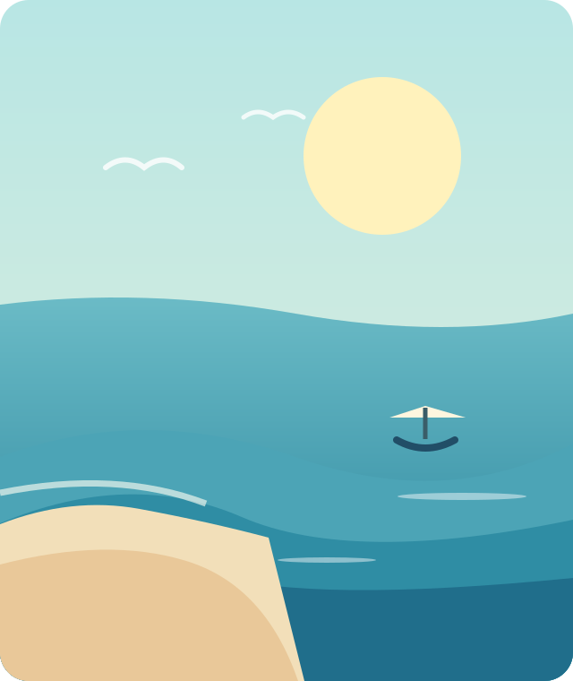

A little slower.
A lot more seaside.
Just landed in Burgas? Staying in Sarafovo? Find your beach, your next walk, and the places worth discovering — all in one easy guide.

COAST27° E
Places to love 〰
From a beach morning to a memorable day trip. Browse the first hand-picked stops.
Just landed?
We've got you.
Sarafovo is the seaside neighborhood next to Burgas Airport. Public bus line 15 connects the airport area, Sarafovo and central Burgas. Some 15A services use a different airport stopping pattern — always check the current route.
Schedules and stop locations can change. Check the operator before traveling.Arrivals are just outside the Sarafovo neighborhood.
Check bus 15 / 15A, or arrange a licensed taxi or private pickup.
Save a few places from the guide and open directions on your phone.
Small place.
Big sea energy.
Sarafovo is a coastal district of Burgas, with a beach, a fishing port, and the airport close by. It's an easy base for slower seaside days and exploring the southern Black Sea coast.
We're building this guide one useful local recommendation at a time. Have a favorite spot? Keep it on your saved list for later.
Find your next stop ↗